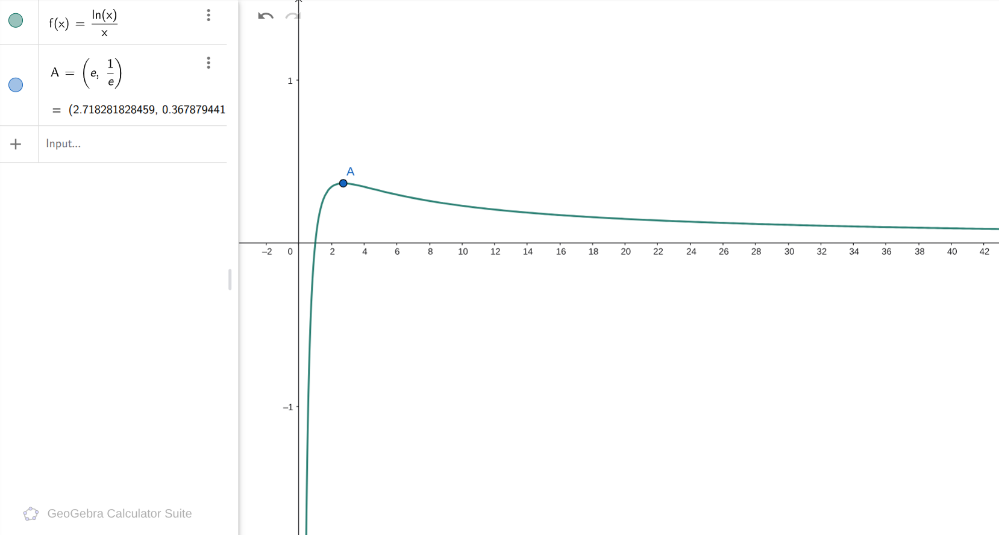
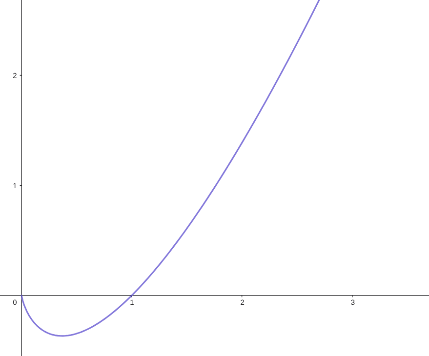

导数
导数的定义
导数描述的是: 瞬时变化率, 类似物理中的瞬时速度
函数 \(f(x)\) 在 \(x\) 位置的导数记为 \(f'(x)\). 显然, 对于一个有定义且能够求导的位置 \(x\), 都有一个 \(f'(x)\) 和它对应, 所以导数也构成一个函数, 记为 导函数
概念区分
“导数” 说的是 单个点 的瞬时变化率, 是一个 数
“导函数” 则是把所有位置的导数这个关系合起来形成的 函数
详细的定义, 可以借助极限的概念: 我们记 \(\lim\limits_{a\to 0}\) 代表 “\(a\) 无限趋于 \(0\)” 这么一个极限的过程 (极限有更严格的定义, 不过我们现在可以先不关注这些, 意会即可)
我们显然可以用 \(\frac{f(x+a)-f(x)}{a}\) 来表示: 从 \(x\) 开始变化 \(a\) 个单位内的平均变化率, 类似于 “平均速度”, 当这个 \(a\) 无限趋于 \(0\), 它就会不断靠近 瞬时速度, 也就是导数. 就是说:
导数与物理
物理中有许多 “变化率”, 因此导数和物理有非常深刻的联系
比如: “速度” 就是位置关于时间的变化率, 同样还有:
-
加速度, 是速度关于时间的变化率
-
电流是电荷量关于时间的变化率
-
电磁感应中, 磁通量关于时间的变化率就是感应出的电动势
-
一个场中 (比如电场), 某个位置的受力 (比如就是电场力) 就是该点的势能关于位置的变化率
等等等等. 如果你物理不错, 可以把导数的概念用到物理中
极限的思想
虽然我们高中不学极限, 并且 \(\lim\) 这个符号也不能出现在试卷上, 但不妨碍我们可以去拥有极限思想, 从而去更深刻的研究函数的变化规律
简单的极限思想是很符合直觉, 很自然的. 比如 \(y=\frac{1}{x}\) 这个反比例函数, 当 \(x\) 越来越大的时候, 它显然会不断减小, 但不是无限减小, 而是减小的越来越慢, 最终往 \(0\) 靠近, 却永远无法到达 \(0\)
这也就是说:
这个现象也被叫做 "收敛". 除此之外, 也有很多收敛的函数. 比如, 当 \(x\to +\infty\) 时, \(\dfrac{\ln x}{x}, \dfrac{\sin x}{x}, \dfrac{x^2}{e^x} \ldots\), 这些都是收敛到 \(0\) 的, 也有 \(\dfrac{x+1}{3x+2}\) 这种函数, 它收敛到一个特定的值 \(\dfrac{1}{3}\)
另一方面, 考察 \(y=\ln x\), 随着 \(x\) 的增大, 它会不断增大, 类似的是, 它增大的速度也越来越缓慢. 但它并没有极限, 而是可以无限的变大. 没错, 它 “不收敛”, 也叫 “发散”
它的情况是, 会不断增大到无穷大. 类似的, \(x^2,e^x,\dfrac{x^3}{2x^2+1}\ldots\) 这些, 也都会越来越大. 也有像 \(\sin x,\cos x\) 这种, 虽然不会变得很大, 但它会来回跳动, 不会趋近于固定的值, 这也是 “发散” 的一种.
学习这些, 有助于帮助我们更准确的画出函数的图像, 更准确的刻画函数的性质, 或者在一些比较难的题里 (尤其是选择填空) 给你一些启发
比如, 现在你发现 \(f(x)\) 是一个递增且发散到无穷大的函数, 并且存在一个位置 \(a\) 使得 \(f(a)\lt 0\), 那你就知道, 既然它可以无限大, 一定存在一个 \(b\) 使得 \(f(b)\gt 0\), 那么 \((a,b)\) 中间就一定存在 \(f(x)\) 的零点. 这就可以帮助你做出一些判断.
当然极限的思想远不止这些, 也有更多奇妙应用, 我们后面会见到一些. 不用担心或焦虑, 这些都是很自然的想法, 很容易理解的, 自己想也能想出来不少
怎样求导
对于 “原子函数”, 我们有导数表:
| 函数 \(f(x)\) | 导函数 \(f'(x)\) |
|---|---|
| 常数 | \(0\) |
| \(x^n\) | \(nx^{n-1}\) |
| \(e^x\) | \(e^x\) |
| \(\ln x\) | \(\frac{1}{x}\) |
| \(\sin x\) | \(\cos x\) |
| \(\cos x\) | \(-\sin x\) |
对于更复杂的函数, 我们可以用公式组合出:
| 函数 | 导函数 | 口诀 |
|---|---|---|
| \(f(x)\pm g(x)\) | \(f'(x)\pm g'(x)\) | |
| \(k\cdot f(x)\)，\(k\) 为常数 | \(k\cdot f'(x)\) | 加减, 数乘, 直接做 |
| \(f(x)\cdot g(x)\) | \(f'(x)g(x)+f(x)g'(x)\) | 前导后不导 + 后导前不导 |
| \(\dfrac{f(x)}{g(x)}\) | \(\dfrac{f'(x)g(x)-f(x)g'(x)}{g^2(x)}\) | 前导后不导 - 后导前不导，分母平方 |
| \(f(g(x))\) | \(f'(g(x))\cdot g'(x)\) | 层层剥开 |
关于“层层剥开”
这东西怎么理解呢? 这里只嵌套两层或许不明显, 我们再来一层
我们求导就是一层一层剥开, 如同剥开洋葱一般
-
先 “剥开” 最外层的 \(f\), 写出一个 \(f'(\ldots)\), 然后继续做里面
-
再 “剥开” 一层 \(g\), 写出 \(g'(\ldots)\), 还剩一个 \(h\)
-
“剥开” 它, 写出一个 \(h'(x)\), 然后里面只剩个 \(x\) 了, 于是 “剥完了”
因此它也叫 “链式法则”
注: 这张表是一个高度精简的表, 它蕴含了一些情况, 比如:
- 链式法则里面, 令 \(g(x)=kx\) 得到: \(f(kx)'=k\cdot f'(kx)\)
比如这样就得到: \((e^{kx})'=ke^{kx}\) - 对于 \(a^x\) 可以看成 \(e^{x\cdot \ln a}\), 从而得到:
- 同理 \(\log_a x\) 可以看成 \(\dfrac{\ln x}{\ln a}\) 从而得到:
写成这种形式, 而不是直接给出 \(a^x\) 与 \(\log_a x\) 的导数, 原因是我觉得这样更本质, 最本质的其实只有 \(e^x\) 和 \(\ln x\), 其它的都可以用它们变形, 组合出.
而且这里还蕴含了一个 处理手段: 用 \(\log\) 把指数打下来
提问
如何求 \(f(x)=x^x\) 的导数?
解答
这就是这个手段给我们的启发了: 我们可以求 \(\ln\), 发现它是 \(x\ln x\)
那我们再 \(e\) 回去, 应该和原来一样, 所以
从而可以用链式法则求导. 我们先求一下 \(x\ln x\), 运用乘法公式: \((x\ln x)'=(x)'\ln x + (\ln x)'x=\ln x+1\)
于是:
到此, 理论上, 高中数学范围内的函数, 无论多么奇形怪状, 我们应该都能够对它求出导数了
导数的应用
由导数的定义, 导数的大小意味着变化快慢, 导数的正负意味着变化方向
那么, 导数的正负, 就和函数的 增减性 强关联: 正就是增, 负就是减
这样就可以描述出函数的增减, 然后再结合一些位置的值, 就可以描述出函数的大致图像了, 有了这个图像, 就能进一步分析性质, 比如一些增减性, 最值, 零点, 等等
例子
描述 \(f(x)=\dfrac{\ln x}{x}\) 的图像, 分析一下它的性质?
解答
首先确定定义域: \(x\gt 0\)
求导, 用除法口诀, 得到
其中 \(x^2\) 是正的, 因此只要看 \(1-\ln x\) 正还是负. 这很显然, \(x\lt e\) 的时候 \(\ln x\lt 1\) 因此是正的, 同理 \(x\gt e\) 的时候是负的
所以:
这里 \(\uparrow\) 和 \(\downarrow\) 表示增和减.
那就可以知道: \(f(x)\) 在 \(e\) 这个位置取到 最大值. 代入数值, \(f(e)=\dfrac{1}{e}\) 就是它的最大值
还有一个细节: 我们知道一边增一边减, 但具体情况如何? 可以用我们的极限思想
-
左半边: \(x\) 靠近 \(0\) 的时候, \(\ln x\) 会变得负很多, \(\frac{1}{x}\) 是正很多, 乘起来, 会负的非常多, 向 \(-\infty\) 靠近
-
右半边: \(x\) 靠近 \(+\infty\) 的时候, \(x\) 增长的比 \(\ln x\) 快, 因此 \(\dfrac{\ln x}{x}\) 会接近 \(0\)
从而就能描绘出这样的图像:

这里可以看到点 \(A(e,\frac{1}{e})\) 是它的最高点, 左边从 \(-\infty\) 上升过来, 右边减小, 往 \(0\) 靠近
类似的, 我们也可以分析出: \(x\ln x, xe^x, \dfrac{x}{e^x}\) 这一类函数的增减情况
一个细节问题
比如我们尝试分析 \(x\ln x\), 很容易得到
但如果你类似的去用极限思想考虑它的细节情况, 就绕不开一个问题: 它在靠近 \(0\) 的时候是怎么表现的?
结论是: 它会不断靠近 \(0\)
为什么呢? 你可以考虑先求出 \(xe^x\) 的图像, 容易分析得到:
-
它 \((-\infty,-1)\downarrow (-1,+\infty)\uparrow\)
-
在 \(x\to -\infty\) 时, \(xe^x\lt 0\) 且 \(xe^x\to 0\)
然后你可以把 \(x\ln x\) 看成: \(\ln x \cdot e^{\ln x}\), 记 \(t=\ln x\), 它就是 \(te^t\)
则 \(x\to 0\) 时, \(\ln x\to -\infty\), 那也就是 \(t\to -\infty\), 那根据上述分析, \(te^t\to 0\)
所以:
总而言之, 根据这些分析, 它的图像长这样:

诶, 那还有一个问题:
-
上述情况中, 我们能比较方便的看到导函数的零点与正负性
-
如果不能, 咋办?
答案是: 对导函数 再求导, 研究它的变化趋势!
为什么呢, 因为, 我们可以把求导想象成是在 “研究”, 事实上也确实如此, 求导是我们研究一个函数最有力的工具. 既然导函数我们依然无法直接把握, 无妨, 我们再对它做进一步的 “研究”.
当然, 有一个技巧是: 对于 \(\frac{f(x)}{g(x)}\) 型的函数, 研究其导函数的时候, 只需要研究分子就行, 因为分母带个平方且不为 \(0\), 肯定是正的, 不用去管它
题型: 恒成立问题
学会了用导函数研究函数之后, 我们来尝试解决一类题型
恒成立问题, 最原始的模型大概是:
-
函数 \(f(x)\) 中含有参数 \(a\)
-
要让 \(f(x)\ge 0\) 恒成立, 求参数 \(a\) 的取值范围
然后, 它有一些变式, 还通常有两种情况
变式:
-
一种变形: 要让 \(\forall x_1\lt x_2, f(x_1)\lt f(x_2)\) 恒成立
显然, 它意味着 \(f'(x)\ge 0\) 恒成立, 于是和上述模型等价 -
“能成立” 问题: 存在至少一个 \(x\) 使得 \(f(x)\ge 0\)
显然 “恒成立” 问题意味着 \(f\) 的最小值 \(\ge 0\), 而 “能成立” 就是变成:
\(f\) 的最大值 \(\ge 0\), 因此本质上道理相同 -
还有一些别的变形, 不过一般都能转换成类似的模型
对于不同的变形, 需要拥有 转换问题 的能力, 把问题变成你熟悉的模型求解
情况:
-
一种是能分参的, 能轻易的分离出单独的 \(a\) 来
比如 \(f(x)=e^x-ax^2+x-a\), 显然可以写成: \((e^x+x)-a(x^2+1)\)
这种我们有固定的手段处理 -
一种是不方便分参的, 比如 \(f(x)=\dfrac{ax}{e^x}+\ln a\)
我们后面也会讨论这种咋办
能分参的
不妨设 \(f(x)=F(x)-aG(x)\), 要让它 \(\ge 0\) 恒成立
操作流程
按如下流程做, 包能做出来:
第一步: 尝试直接移项除过去: 变成 \(F(x)\ge aG(x)\), \(a\le \dfrac{F(x)}{G(x)}\)
这个要注意讨论 \(G(x)\) 的正负, 这里默认是正的
那么我们对 \(\dfrac{F(x)}{G(x)}\) 这个函数直接求最小值就可以了, 如果能求出来, 那就一定是正确答案
第二步: 上述问题在于, 这个函数可能 取不到最小值
比如常见的情况是:
-
\(F(0)=G(0)=0\), 共起点
-
\(\dfrac{F(x)}{G(x)}\) 递增, 因此 \(0\) 处取最小值
-
但又不能取 \(x=0\), 因为 \(G(x)=0\) 不能做分母
-
于是最小值取不出来!
这个时候, 我们按照学校里说的 “端点效应” 处理, 也就是
-
此时, \(f(x)\ge 0\) 恒成立的 充要条件 是 \(f'(0)\ge 0\), 也就是 \(F'(0)\ge aG'(0)\)
-
按道理它只是一个必要条件, 但在这个情况下, 在这个最小值取不出来的情况下, 它 充分
它为什么是对的?
-
信我, 不骗你!
-
其实是: 它的正确性涉及到洛必达法则, 我们不方便展开, 我们先接受它是对的
操作演示
这样说有点虚, 我们打一个实际操作来
问题一
\(e^x\ge ax\) 对任意 \(x\gt 0\) 恒成立, 求 \(a\) 范围
解答
这会 \(x\) 是正的, 可以直接移项变成
研究后者的最小值即可, 设为 \(f(x)\), 求导,
显然
所以 \(f(1)=e\) 为最小值
所以:
这种就是, 直接分参就求出来了的情况
问题二
\(e^x-1\ge ax\) 对任意 \(x\ge 0\) 恒成立, 求 \(a\) 范围
解答
同样, 移项, 变成
设为 \(f(x)\), 求导:
它比之前那个导函数的分子大 \(1\), 我们不方便直接看出分子的正负, 取出分子
求导, 研究它的情况, 发现:
所以
而 \(g(0)=0\) 为它的最小值, 因此我们知道 \(g(x)\ge 0\)
这东西是 \(f'(x)\) 的分子, 所以我们知道: \(f'(x)\ge 0\)
\(f\) 是递增的！
那我们要让 \(a\le f_{\min}\) , 这个最小值, 取不出来！
于是, 根据上述道理, 我们直接上端点效应:
\(e^x-1\ge ax\) 恒成立, 则必然有 \((e^x-1)' \ge (ax)'\)
也就是 \(e^x\ge a\) 要恒成立, 在 \(x\in [0,+\infty)\)
那显然最小值是 \(e^0=1\), 所以 \(a\le 1\), 是必要条件
根据之前说的道理, 它就是充分条件
所以:
关于考场上的过程书写:
-
我们最开始的分参的尝试, 写在草稿纸上, 因为它有可能失败 (如问题二)
-
失败的时候, 我们直接不要在试卷上写分参, 直接从端点效应开始写
-
关于那个 “必要条件一定充分” 的论证: 其实你只需要把你的必要条件 代入回去, 并检验此时一定恒成立, 就说明它充分了, 并且, 根据我们说的道理, 此时你 一定能成功证明 它充分
练练手
技巧: 隐零点, 设而不求
这个技巧常常蕴含在恒成立问题里面
比如, 考虑我们刚才的分参流程: 我们要求出某个 \(f(x)\) 的最小值
但这个最值点, 在哪呢? 我们有可能可以解出来, 也有可能不能, 那解不出来咋办?
观察到: 我们也不需要求出 点 在哪, 我们求出 值 就可以了
那就可以: 设这个点为 \(a\), 它满足某些等式关系, 然后代入 \(f(a)\) 求值, 即可
练练手
不能分参的
这个比较难处理, 往往需要抓住一些特征
通常我们的做法是, 考察: 随着 \(a\) 的变化, \(f\) 的最值点的位置如何变化, 最值又如何变化
有些时候会有一些特殊性值, 比如 \(f(x)\) 是不是关于 \(a\) 递增? 这样的话, 一定是 “a越大越成立”, 答案肯定是 \(a\) 大于某个临界值, 然后我们抓住临界值的特征, 解出临界值即可
例题
\(f(x)=\dfrac{a}{e^x}+x\ln a\ge 2\) 恒成立, 求 \(a\) 的范围
解答
首先可以发现 \(a\le 1\) 肯定是不行的, 因为这样的话后面的 \(\ln a\le 0\), \(x\) 一大就不行
因此至少有 \(a>1\)
然后, \(f'(x)=\ln a-\dfrac{a}{e^x}\) 是增函数, 在 \(e^x=\dfrac{a}{\ln a}\) 的时候为 \(0\), 这个极值点也就是
记这个分界点为 \(m\), 那么
所以 \(f(x)\) 在 \(x=m\) 的时候取最小值, 要 \(\ge 2\) 恒成立, 也就是要求: \(f(m)\ge 2\)
显然可以换元, 设 \(t=\ln a\), 就要求:
简单求导发现这是一个增函数, 且在 \(t=1\) 的时候正好等于 \(2\), 所以:
也就是: